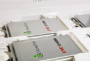

"Журнал «Украина Электро»"
Американські вчені розробили акумулятор,
що працює на морській воді
22 Янв 2021
Літій-іонні батареї мають вирішальне значення для сучасного життя, від живлення наших ноутбуків і мобільних
телефонів до
електромобілів. Але є ризик для безпеки - батареї можуть спалахнути. Дослідники з х'юстонського
унівеситету розробили
новий анод батареї, який долає обмеження літій— іонних батарей і пропонує стабільну,
високопродуктивну батарею, яка
використовує морську воду в якості електроліту. Читать полностью »
Метки: батареї , електроліт
Рубрика: Актуальные новости электротехники и энергетики | Нет комментариев
Електромобілі отримають батарею, яка заряджається
за 5 хвилин (відео) -->
22 Янв 2021

Ізраїльська компанія StoreDot Ltd. створила перший у світі акумулятор для електрокарів,
який заряджається лише за п’ять хвилин
Читать полностью »
Метки: StoreDot , АКБ , акумулятор для електрокарів
Рубрика: Актуальные новости электротехники и энергетики | Нет комментариев
У Volkswagen показали робота, що заряджає
електромобілі (відео)
21 Янв 2021
Ще рік тому компанія розповідали про концепт мобільних роботів-акумуляторів,
які будуть самі заправляти електромобілі.
Тепер автовиробник вперше представив широкому прототип,
що здатний заряджати електромобілі. За допомогою нової
технології компанія сподівається здешевити
створення інфраструктури для електромобілів
Читать полностью »
Метки: зарядные устройства для электромобилей , робототехника , электромобили
Рубрика: Актуальные новости электротехники и энергетики | Нет комментариев